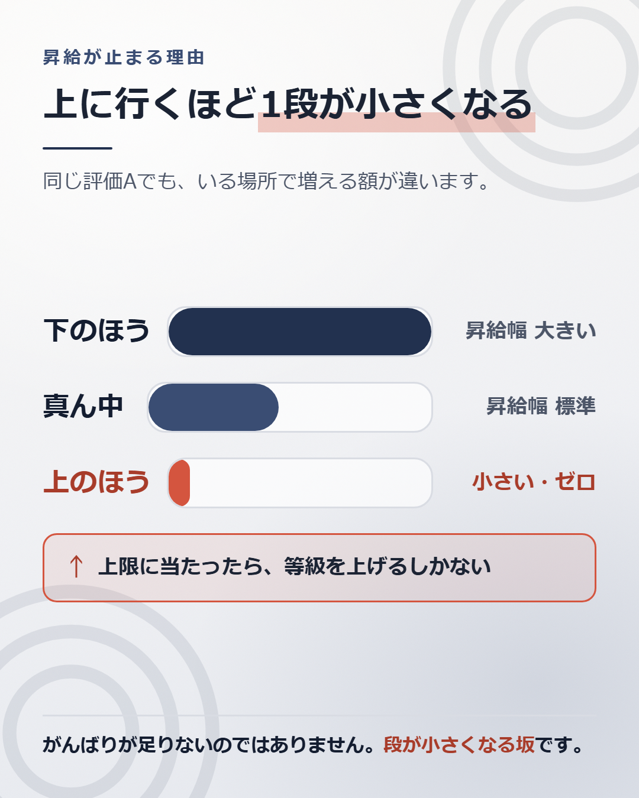

評価がずっとAでも、昇給は止まります。
サボっていたわけではありません。止まるように設計されているからです。

明細の「基本給」が去年より増えたとき、増えた理由は2つあります。
定期昇給は、自分の位置が変わることです。ベースアップは、位置が同じでも金額が上がることです。
ベースアップが無い年は、自分が上に動いた分しか増えません。 会社が「今年は昇給あり」と言っていても、中身が定期昇給だけなら、全体の水準は去年のままです。
労働組合のある会社では、春の交渉の結果として社内に通知が出ます。2つが分けて書いてあることが多いので、見れば分かります。
世の中全体の動きも、分けて調べられています。厚生労働省の「賃金引上げ等の実態に関する調査」が、賃金を改定した会社の割合と、定期昇給とベースアップのどちらを行ったかを毎年公表しています。
そもそも昇給について何をどう決めるかは、就業規則に書いてあります。労働基準法89条2号が、昇給に関する事項を就業規則に書いて届け出るよう会社に求めています。 「うちの会社にベースアップはあるのか」は、規程を読めば分かることがあります。
ここが、止まる理由の本体です。
記事1で書いたとおり、等級ごとに基本給のレンジ（上限と下限）が決まっています。
多くの会社は、レンジの中をさらに区切って、区画ごとに昇給の幅を変えています。
同じ評価Aでも、レンジのどこにいるかで、増える金額が違います。
若いうちは昇給が大きく感じます。レンジの下にいるからです。数年たつと、同じ評価でも増え方が鈍ります。上限に近づいているからです。
「がんばりが足りない」わけではありません。近づくほど、1段が小さくなる坂を登っています。
レンジの上限に当たると、評価が高くても基本給は動きません。
動かすには、等級を上げるしかありません。 段が変われば、レンジごと変わります。
記事1で書いたとおり、昇格には2つの条件があります。要件を満たすことと、上の段に空きがあることです。要件は規程に書いてあります。空きは書いてありません。
だから「評価はいいのに、もう何年も基本給が動いていない」が起こります。評価の問題ではなく、席の問題です。
基本給が止まっても、賞与は動きます。
賞与は「基本給 × 月数 × 評価係数」の形が多いので、評価が高ければ係数で増えます。会社の業績が良ければ月数でも増えます。
ただし土台は基本給のままです。 基本給が止まっている人は、賞与の伸びしろも止まっています。
ここは、転職を考えている人にいちばん関係する話です。
新卒で入った人は、全員が同じ段から始まります。中途で入る人は違います。面接と提示の段階で、レンジのどこに置くかが決まります。
同じ等級で入っても、レンジの下のほうに置かれるか、真ん中に置かれるかで、金額が変わります。
そして、一度置かれた位置は、あとから大きくは動きません。
上で見たとおり、レンジの中での移動は毎年の昇給です。1回あたり数千円から1万円台です。入口で3万円低く置かれたら、追いつくのに何年もかかります。
入口の金額を決めるのは、そのときの交渉です。交渉の材料になるのは、いまの年収と、市場でついている値段です。
いまの年収は明細を見れば分かります。市場でついている値段は、自分では分かりません。
材料を片方しか持たずに交渉すると、相手の提示した位置に置かれます。
社内で「昇給してください」と言って通ることは、あまりありません。
理由はここまでで見たとおりです。レンジがあり、区画ごとに昇給幅が決まっていて、評価には分布の枠があります。 上司の裁量で動かせる幅が、そもそも小さいのです。
効くのは、昇給の交渉ではなく、昇格の相談です。段が変われば、レンジごと変わります。
聞き方も変わります。「給料を上げてください」ではなく、「次の等級に上がるために、あと何が足りませんか」です。
前者は裁量の外の話です。後者は、上司が答えられる話です。
過去3年ぶんの、4月と5月の明細を出してください。
基本給だけを3つ並べます。1年目から2年目の増え方と、2年目から3年目の増え方を比べます。
増え方が小さくなっていれば、レンジの上のほうに近づいています。
次に、給与規程で自分の等級の上限を探します。いまの基本給との差が、この席に座ったまま増やせる残りの金額です。
差が1万円しかなければ、あと何年勤めても、基本給は1万円しか増えません。
残りが少ないと分かったとき、道は2つです。等級を上げるか、席そのものを変えるか。
等級を上げられるかは、規程と、上の段の空き具合で決まります。社内を見れば、おおよそ見当がつきます。
席そのものを変えたとき、いくらになるのかは、社内では分かりません。 外から値段がつかないと分かりません。
調べ方は、別の記事にまとめています。